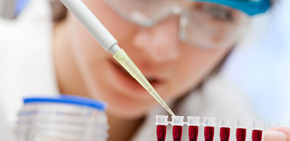

Genetic Causes
Mutations in the BRCA1 and BRCA2 genes can increase the risk of an individual being afflicted
with this disease. Other genes, such as those related to cell growth and DNA repair, might also
increase the risk of breast cancer.
This is why breast cancer is an autosomal disease.
Environmental Causes
Exposure to ionizing radiation, environmental pollutants, and toxic chemicals are all thought to
be 'risk factors' for breast cancer, as they could increase the chance of mutations occuring.
Hormonal Causes
Abnormal signaling of hormones might also cause breast cancer. This can be caused by genetic factors.
Prevention
You could try to get yourself genetically tested, to understand your risk of obtaining breast cancer.
Lifestyle modifications, such as maintaining a healthy weight and limiting alcohol can reduce the risk
of breast cancer (and are good for you anyways).
